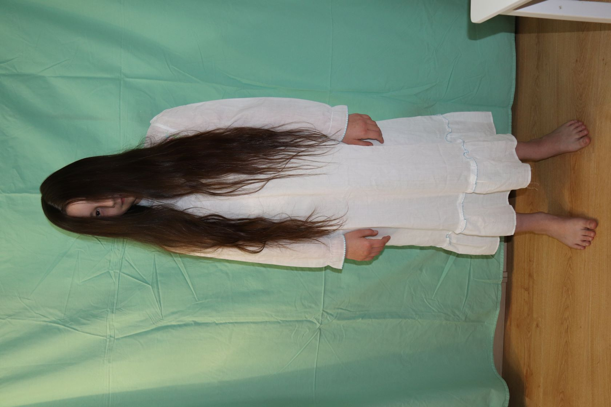
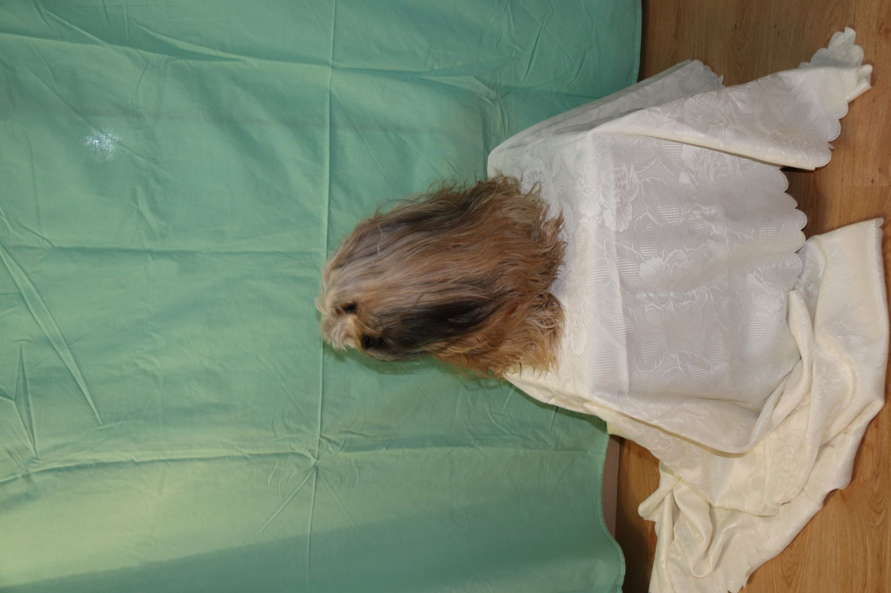

Mon premier projet était de réaliser une photo d'un fantôme. Pour ce faire j'ai procédé en 3 étapes :
tout d'abord j'ai pris des photos avec un fond vert puis j'ai pris en photo le décor
et enfin j'ai créé mon image avec le logiciel Gimp.

Je voulais une jolie photo de moi, mais comme l'arrière plan n'était pas très beau.
J'ai retouché ma photo en mettant en pratique mes cours de Photoshop.